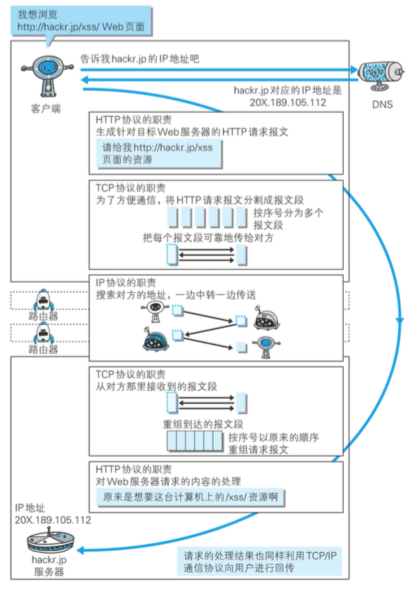

TCP/IP 是在 IP协议 的通信过程中使用到的协议族的统称。
什么是协议（protocol）？
不同的硬件、操作系统之间的通信, 所有的这一切都需要一种规则，这种规则就被称为 协议(protocol)。
TCP/IP（协议全家桶）
对于 TCP/IP 的说法不一，主要有以下几种说法：
- 与互联网相关联的协议集合起来总称为
TCP/IP - 也有说法认为,
TCP/IP是指TCP和IP这两种协议 - 还有一种说法认为,
TCP/ IP是在IP协议的通信过程中,使用到的协议族的统称
In a word，TCP/IP 其实就是协议全家桶的意思。
TCP/IP 的分层管理
分层，这是 TCP/IP 协议族里重要的一点。TCP/IP 协议族按层次分别分为以下 4 层:
- 应用层
- 传输层
- 网络层
- 数据链路层
应用层
应用层决定了向用户提供 应用服务 时 通信的活动。
HTTP协议FTP(File Transfer Protocol,文件传输协议)DNS(Domain Name System,域名系统)
传输层
传输层提供处于网络连接中的两台计算机之间的数据传输。
TCP(Transmission Control Protocol,传输控制协议)UDP(User Data Protocol,用户数据报协议)
网络层(又名网络互连层)
网络层用来处理在网络上流动的数据包，该层规定了通过怎样的路径 (所谓的传输路线)到达对方计算机,并把数据包传送给对方。
与对方计算机之间通过多台计算机或网络设备进行传输时,网络层所起的作用就是在众多的选项内选择一条传输路线。
链路层(又名数据链路层,网络接口层)
用来处理连接网络的硬件部分。
TCP/IP 通信传输流

利用 TCP/IP 协议族进行网络通信时,会通过分层顺序与对方进行通信。
发送端从应用层往下走,接收端则往 应用层往上走。
当客户端发送了一个 HTTP 请求
我们用 HTTP 举例来说明。
- 客户端在
应用层(HTTP协议)发出一个想看某个Web页面的HTTP请求。 - 在
传输层(TCP协议)把收到的数据(HTTP请求报文)进行分割,并在各个报文上打上标记序号及端口号后转发给网络层。 - 在
网络层(IP协议),增加作为通信目的地的MAC地址后转发给链路层。 - 接收端的
服务器在链路层接收到数据,按序往上层发送,一直到应用层。 - 当传输到
应用层,才能算真正接收到由客户端发送过来的HTTP请求。
HTTP 的三个好基友：IP、TCP 和 DNS
负责传输的 IP 协议
IP(Internet Protocol)网际协议位于网络层。IP 协议的作用是把各种数据包传送给对方。
而要保证确实传送到对方那里,则需要满足各类条件。
其中两个重要的条件是 IP 地址和 MAC 地址(Media Access Control Address)。
IP 地址可以和 MAC 地址进行配对。IP 地址可变换,但 MAC 地址基本上不会更改。
使用 ARP 协议凭借 MAC 地址进行通信
ARP 是一种用以解析地址的协议, 根据通信方的 IP 地址就可以反查出对应的 MAC 地址。
确保可靠性的 TCP 协议
TCP 位于传输层,把数据分割，更容易传送大数据,而且 TCP 协议能够确认数据最终是否送达到对方。
三次握手
为了准确无误地将数据送达目标处,TCP 协议采用了三次握手(three-way handshaking)策略。
握手过程中 使用了 TCP 的标志(flag)：SYN(synchronize) 和ACK(acknowledgement)。
- 第一次握手：发送端首先发送一个带
SYN 标志的数据包给对方。 - 第二次握手：接收端收到后,
回传一个带有SYN/ACK 标志的数据包以示传达确认信息。 - 第三次握手：最后,发送端再回传一个带
ACK 标志的数据包,代表“握手”结束。
PS: 除了上述三次握手,TCP 协议还有其他各种手段来保证通信的可靠性。
负责域名解析的 DNS 服务
DNS(Domain Name System)服务是位于应用层的协议。DNS 协议提供通过域名查找 IP 地址,或逆向从 IP 地址反查域名的服务。

各种协议与 HTTP 协议的关系

URI 和 URL
URL
URL(Uniform Resource Locator，统一资源定位符) 是使用 Web 浏览器等访问 Web 页面时需要输入的网页地址。
URI
URI(Uniform Resource Identifier，统一资源标识符) 就是由某个协议方案表示的资源的定位标识符。协议方案是指访问资源所使用的协议类型名称。采用 HTTP 协议时,协议方案就是 http。
URI 用字符串标识某一互联网资源,而 URL 表示资源的地点(互联网上所处的位置)。可见 URL 是 URI 的 子集。